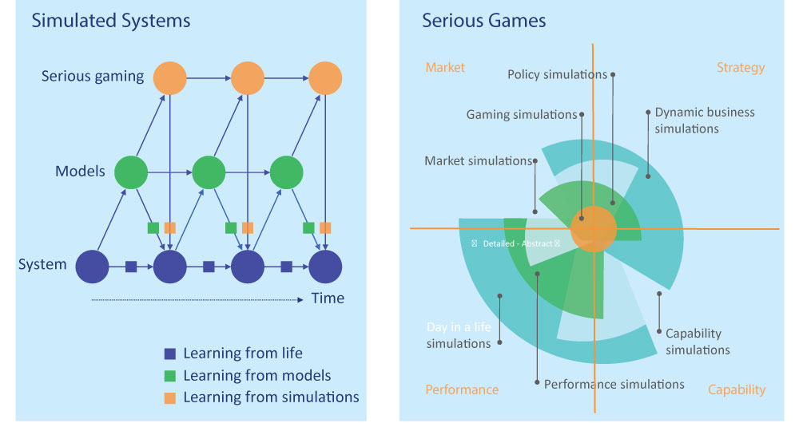
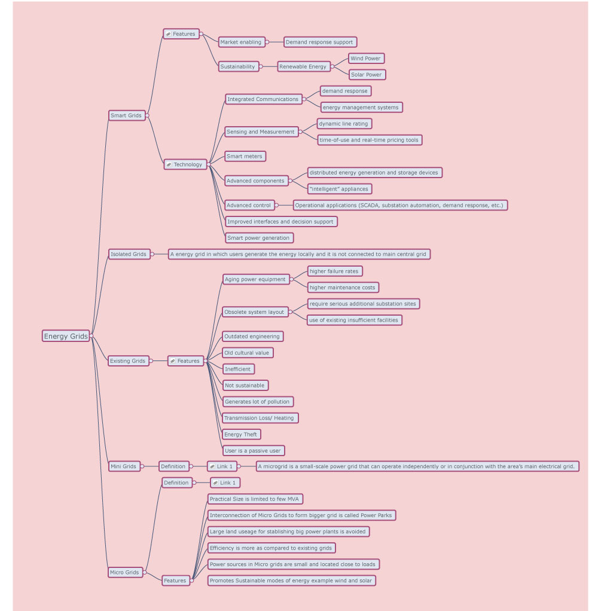
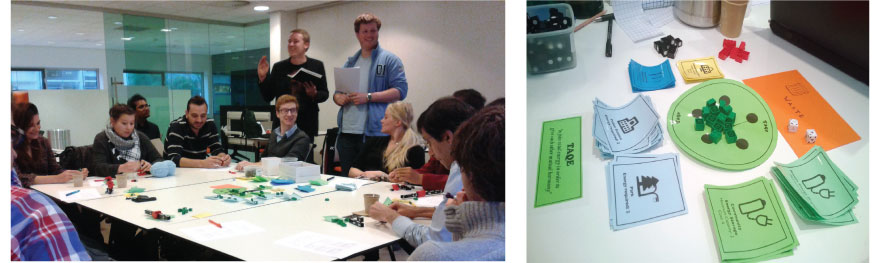
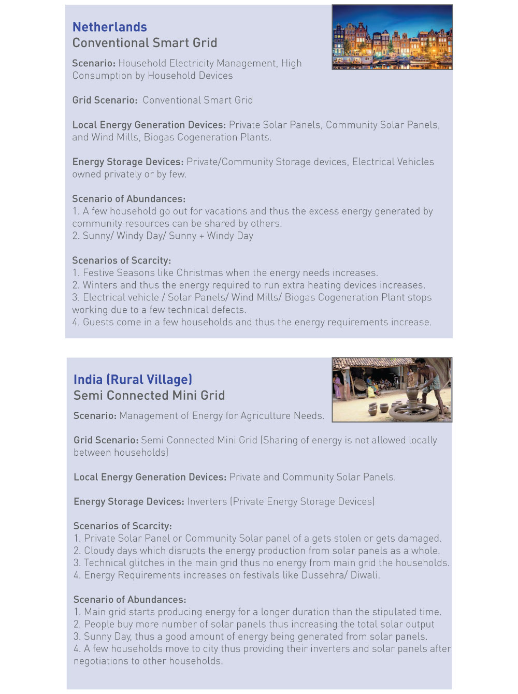
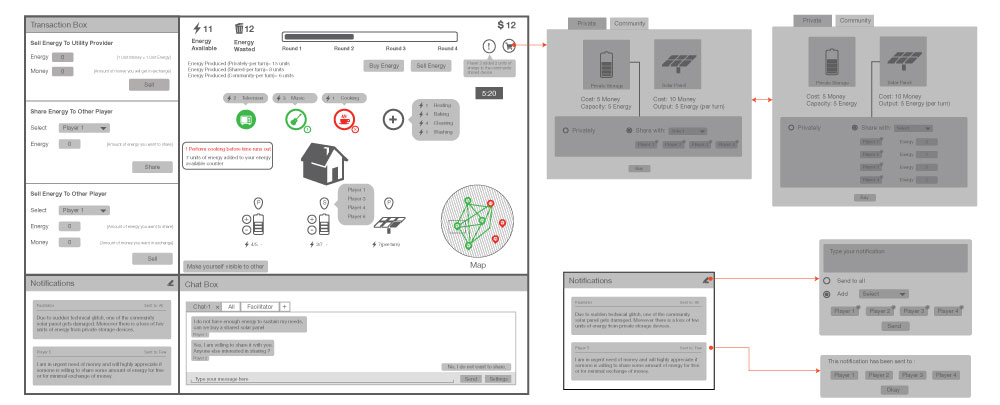
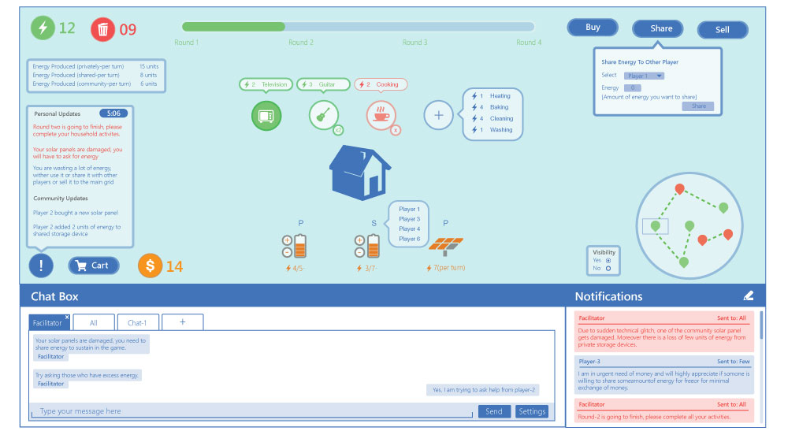
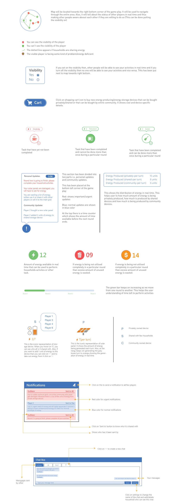

Game Design, User Research, Information Architecture
A thorough literature review was done in two phases. The first phase included understanding in depth about the various grid systems(mini grid, micro grid, smart grid, and traditional grid). In the second phase, I was to learn about the key concepts of serious games, simulation techniques, gamification, learning theories and game mechanics in details.
Playtesting for the existing concepts of the game, which was in the form of board game was done by self playing and playing the game with other people for four times to critically evaluate the problems in the current version of the game so that it can be rectified in the digital version.
Playtesting for the existing concepts of the game, which was in the form of board game was done by self playing and playing the game with other people for four times to critically evaluate the problems in the current version of the game so that it can be rectified in the digital version.
To start with the conceptualisation of the game we create majorly four scenarios(two of them are represented below), each of them with a different geographic location and different type of energy grid. Each of the scenario was combined with cases of scenario of scarcity and abundances.
Paper prototyping was followed by creation of high fidellity wire-frames, which after four to five phases of iteration was finalised.
Below shown are few of the screens of the final solution that was submitted.
Few of the important concepts of the game have represented in a detailed format below. However, the game is quite complex to understand without an informative manual. I am working upon it and will upload it soon
 >Designed and Developed with by Rohan Vijay